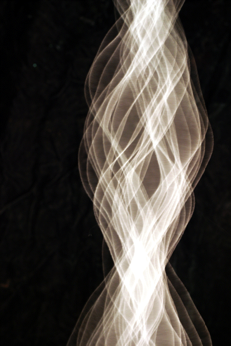
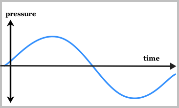
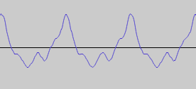
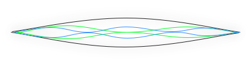
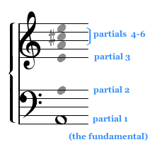
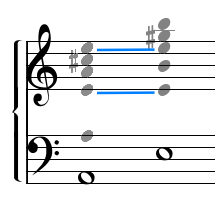
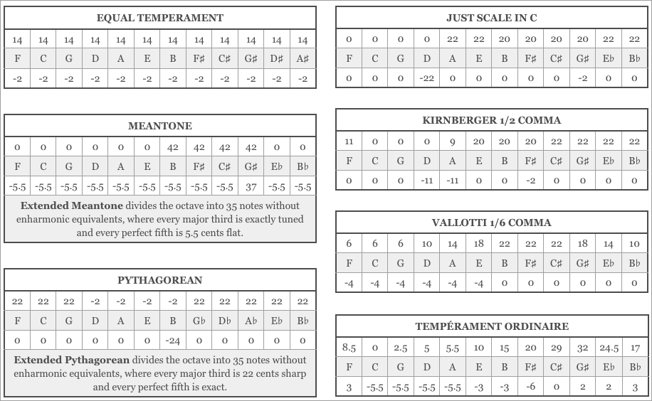

-

Chapter 15 (Appendix)
The Physics
of MusicMusic depends on our perception of sound, and the way that sound works
in music is a topic that has interested philosophers, music theorists, and composers since the time of Pythagorus. Styles change and musical cultures differ, but sound itself works as it did a thousand years ago and as it will a thousand years from today.
“String Vibrations,” Andrew Davidhazy, Rochester Institute of Technology (2008)
The photo shows modes of vibration in a single string. -
215
Section 1
Partials
All sound is vibration, but the pitched sounds used in music are vibrations at a constant rate per second, called the frequency of vibration. For most people’s ears the lowest frequency that sounds like a musical tone is about 27 vibrations per second, close to that produced by the lowest note on a full-sized piano. The highest frequency we can hear diminishes as we grow older but at its
best rarely exceeds 16,000 cycles per second, about two octaves above the highest note of a piano. The ability to hear high pitches
(or, as we’ll see below, the high components of lower notes) is permanently damaged by exposure to loud sounds, something that should be borne in mind when attending amplified concerts.Since sound vibration amounts to a fluctuation in air pressure it’s
often represented in a two-dimensional graphic form with time running on the horizontal axis and pressure on the vertical axis, as shown in Figure 15.1.The graph shows a smooth increase and decrease in pressure which,
if repeated 110 times a second, would sound like a very colorless
“A” two octaves below middle C. This simple curve follows the shape
of the mathematical sine function, and so it’s called a sine wave Sine Wave The wave form of the simplest possible sound, which follows the mathematical curve described by the sine function. All musical tones can be analyzed as a combination of sine waves. . However, sounds created by acoustic (i.e., not electronic) musical instruments are never so plain as this, because any physical object is
too complicated to produce only a sine wave when it vibrates.Figure 15.1 A sine wave
-
216
For example, here’s the waveform produced by a French horn playing a single note:
The horn waveform can be analyzed as the sum of many sine waves of different frequency, all of which are being heard simultaneously. That’s why natural sounds are said to be complex; they are a mixture of many different frequencies, called partials Partials A component of a musical tone
whose frequency may or may not
be a multiple of the fundamental frequency. A natural sound is not a single frequency, but a composite of many. The lowest frequency is the fundamental, the higher ones are the partials. The overtone, or harmonic partial, is a special class of partial whose frequency is a multiple of the fundamental frequency. .In pitched sounds – sounds with a repeating waveform –
these different frequency components have an interesting relationship to each other that can be illustrated by examining a hypothetical vibrating string. If you pluck a string that is tightly stretched between two points, it will vibrate along its whole length, creating a waveform like the sine wave above,
but it will also vibrate in halves, thirds, fourths, fifths, etc.The figure below illustrates, in a very exaggerated way, the first three modes of vibration of a taut string:
The various modes of vibration give rise to additional tones that complicate the wave form graph. Ideally (if the string is perfectly flexible and even) each of these other tones has a frequency closely related to the original one produced by the whole string. If the whole string is vibrating at 110 cycles per second, half of it will vibrate at twice 110, or 220; a third of
it will vibrate at three times 110, and so on. Each of these
other vibrations will add to the total, so that the sound of
the whole vibrating string is actually a combination of many pitches. Partials having this relationship of 1,2,3... times the fundamental frequency are called harmonic partials, or harmonics Harmonics Most commonly used to refer to the tone produced by stopping a string at one of its nodes, which isolates the higher frequencies that happen to divide at that point in the screen. Most common is to touch the string at its midpoint, which brings out the octave harmonic. , and if you listen very carefully to a vibrating guitar string you can actually hear them.Figure 15.2 The waveform produced by
a French horn playing C above middle CFigure 15.3 The first three modes of vibration
-
217
For example, if you played a low “A” you would hear the harmonics shown below.
Performers of stringed instruments sometimes isolate a particular harmonic by touching the string at one of the division points or nodes Nodes One of the points of division along
a vibrating string or column of air.
A string or column of air vibrates simultaneously in various divisions
of its length: the whole length, then in halves, in thirds, etc. Each dividing point is a node. On a vibrating string, touching a node will block all the tones that do not divide at that point, making the “harmonic” more audible. For example, touching a vibrating guitar string at its midpoint node will produce the octave harmonic. ; this dampens all the partials that don’t divide at that point and makes the harmonic easier to hear.Since the same phenomenon occurs with columns of air, as in the trumpet, and in fact any vibrating body, the overtone series Overtone A component of a musical tone whose frequency is a multiple of its fundamental frequency. A pitched tone differs from unpitched noise in
that it has a steady frequency of vibration with partials that are approximate multiples of its fundamental frequency. These are called harmonic partials,
or overtones. Naturally produced musical tones always will be a complex in which the fundamental frequency is accompanied by overtones approximately twice that frequency, three times that frequency, and so on, which form the “overtone series.” The pitch accuracy of these overtones depends on the material producing the vibration. Overtones from an ideally thin and flexible string are mathematically exact multiples of the fundamental frequency,
but a stiffer string’s overtones will be somewhat distorted. Bells are a good example of a musical instrument with noticeably distorted overtones.
For the same reason, a large piano with strings that are thin in relation to their length has clearer, less distorted overtones than a short spinet piano with strings that are thick relative to their length. is part of all musical sounds. In some instruments, like bells, the overtones are distorted by the stiffness of the material, but most pitched instruments make a fairly accurate overtone series at least as high as we can hear it (theoretically it goes on forever). This brings us to the importance of the overtone series for harmony.If you play two notes at the same time they will each have their own overtone series, and if the two notes happen to have just the right relationship to each other some of those overtones may match or come close to matching. For example, suppose you play A and E together. If the shared overtones almost match, an interference pattern is created that sounds like a wavering or beating. You can, however, carefully raise or lower the pitch of one of the notes until the beating stops, which will happen when the coincident overtones match exactly. At that point the two notes will seem to be in “agreement.” We could also say that they are “in tune.”
Figure 15.4 Six partials of A
Figure 15.5
Fundamental tones A and E and their coincident partials -
218
It’s difficult to hear overtones beyond the first six or so, since they become faint, but the first six are enough. The sixth is a convenient place to stop for other reasons as well: the seventh partial would create an interval that had no possibility of agreement with any of the first six, and the eighth partial is merely an octave, so the next practical partial is the ninth,
which is so quiet that it can’t have much effect on the harmony. The first six partials give us all of the musical intervals that have the potential, if adjusted carefully, of being in agreement or being “consonant.” In fact, our ear accepts these as being basically in agreement even if they are slightly out of tune;
our tolerance seems to extend to the point where the beats become too fast to be easily counted. However, not all intervals have this potential for consonance, because not all of them have matches among the most easily-heard partials. The intervals with a clear potential for agreement are the unison, octave, fifth, fourth, major and minor thirds, and major and minor sixths.
The other intervals, such as the second, have no possibility of matched partials among the first six, and so we regard them as being comparatively unrelated, unstable, or “dissonant.”Instrumental Color
Different musical instruments give varying emphasis to each of the partials, which accounts for a large part of each instrument’s
characteristic “color.” The clarinet, for example, emphasizes
just the odd-numbered partials, whereas the oboe is rich in all
of them. The highest partials of the piano are quieter than those of the harpsichord, and they are also more distorted, since the strings of the piano are thicker in relation to their length. The superior sound of a full-size grand piano is largely due to the longer and relatively thinner strings, which allow more accurate partials and clearer tone.Changes in partials are also an important part of instrumental color: plucked strings like those of the guitar begin with many partials and lose the higher ones as the sound dies away; a trumpet note, conversely, can begin with relatively few partials and gain more as it progresses. Extraneous noises are significant for some instruments, though we may notice them only when they are missing. These include the wind or “chiff” at the beginning of a note played by a large organ pipe, the thunk of
a piano hammer against the string, and the scraping sounds produced by a violin bow as it attempts to start a string moving. There are also various tones that come from the resonance of other parts of the instrument: the tone of a violin’s wood mixes with the tone produced by the bowed string, for example.
The result is that the sound of an acoustic instrument can be extremely complex, which is why it’s so difficult to imitate electronically.219
Section 2
Temperament
You might think that the ideal way to tune your piano would
be to make each of the consonant intervals sound exactly in
tune, so that no beating could be heard. Indeed, many musicians have long regarded this as a sort of ideal, but it doesn’t work
out very well on a keyboard with only twelve keys to the octave.
For example, you can tune your A so that it will make a very
nice sixth above your C, and the G as a good fifth above the C, and the D to make a good fifth below A, but then you’ll find
that the G will be out of tune with the D. In other words, it doesn’t come out even; you can’t tune all the consonances to
be simultaneously exactly right unless you have two different keys for some of the notes, such as one D tuned to agree with
G and another D made to work with A.This problem was solved in many different ways over the
years. The first solution was to tune the fifths exactly right and not to worry about the thirds and sixths, just as Pythagoras, the semi-legendary discoverer of musical mathematics, had done. This Pythagorean tuning was the basis of organ tuning and music theory until around the late 14th or early 15th century. Thirds and sixths were regarded as dissonant intervals, or at least imperfectly consonant.But when musicians began to want to use the consonant third a compromise had to be found, and they responded by tempering
(to “temper” an interval means to adjust its tuning a little bit away from perfect) that troublesome D to the mean (average) of the two that were needed, which produced a temperament Temperament One of the various ways of tuning an instrument to compromise acoustical precision. It’s not possible to tune a piano in such a way that all its intervals are acoustically exact. “Temperaments” adjust a keyboard’s tuning to make a compromise between acoustical exactitude and the limitations of having only 12 keys per octave. “Equal temperament” is the modern standard, in which all half steps are the same size, all major thirds a little larger than acoustically exact major thirds, and all fifths very slightly narrow. in which most of the thirds were very good and most of the fifths were only slightly off; this we now call meantone Meantone A traditional way of tuning the notes
of the keyboard to make the most common thirds sound more like the acoustically exact third. temperament.Meantone was used for several centuries and is still enjoyed by connoisseurs of early music, but it had one problem: since four of the less-common thirds were very discordant (and one fifth, the wolf fifth, was really awful), meantone didn’t allow the free use of all the intervals in all the keys. So musicians began to alter the compromise a little with the hope of making the wolf and
the bad thirds less objectionable. The Vallotti temperament is a variant of meantone in which the wolf is gone, the bad thirds are not quite so large, and the good thirds are, in trade, not quite so good as they were in normal meantone. Others invented schemes in which some chords have both perfect thirds and perfect fifths and others have varying shades of inexactness; the Kirnberger temperament is an example. In these tunings that grew out of meantone there begins to be some variety in the quality of the acceptable chords, which may have contributed to the notion that different keys have different characters – for example,
C major was thought to be pure and cheerful, while F sharp major was harsh and dark.220
The temperament that won out in the end, at least so far, was equal temperament, in which all the thirds are just barely OK
but all the fifths are very good. Equal temperament has much to recommend it; besides being the same in all keys its large major thirds are well-suited to melody, which is an important factor in our music. For some reason musicians often prefer large thirds
for melody even though the smaller thirds make smoother harmony. Fortunately, most of us are able to accept the larger thirds in harmony, too, especially since the modern piano does not emphasize the higher overtones the way the harpsichord did. Nonetheless, many musicians experiment with tuning, and there may yet be something of a revival of alternate systems, even ones with more
than 12 notes to the octave, which are much easier to implement with electronic musical instruments than they were with
mechanical ones.On an Apple® computer you can experiment with temperaments by choosing one from the Temperaments menu in Practica Musica (see Options: Sound and MIDI). Any music you select will be performed with the chosen temperament. The below movie doesn’t require any particular kind of computer. You can listen to it now and hear chords played in Pythagorean, Just, and Equal Temperaments.
Movie 15.1 Comparison of tunings
221
Figure 15.6 The following is a chart of each of the tunings and temperaments provided with Practica Musica.
The variations in tuning are measured in cents (one cent = 1/1200 octave or 1/100 of an equal-tempered half step).
The upper rows show the size of the major third above each note, as compared with the acoustically exact interval,
and the lower rows show the same comparison for the fifth above the given note. A zero in either place means that
the interval is acoustically exact and will sound without any “beating.”222